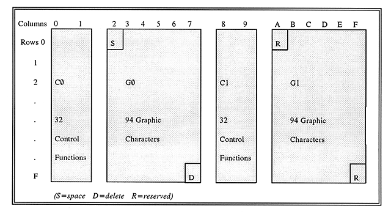
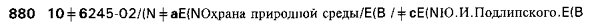

The Library of Congress >> Especially
for Librarians and Archivists >> Standards
The Library of Congress >> Especially
for Librarians and Archivists >> StandardsSpecifications for MARC 21 records using MARC-8 encoding are given below in this section. MARC-8 code points are derived from several sources, most of these being standard script-specific character sets. The various component sets of the MARC-8 set are identified and accessed through the use of escape sequences. The total collection of characters that are encoded by the component sets constitutes the MARC-8 repertoire. The MARC-8 repertoire is a closed repertoire and no additions are planned. Implementations that require characters beyond this repertoire should consider using the Unicode encoding instead of MARC-8.
The MARC-8 character repertoire is composed of the combined repertoires of several character sets, either standard or custom. These are identified below in the section Accessing Alternative Graphic Character Sets, and their encoding is specified in Part 5.
The character sets used to encode the MARC-8 repertoire were developed at a time character set design and specification was conceived in terms of fitting sets into the 128 code points available in a 7-bit matrix. Such a set is frequently referred to as a code page. Employing the eighth bit available in most computer architectures allows two code pages to be used at the same time. An 8-bit environment is assumed throughout the following discussion.
Graphic character sets encoding a larger character repertoire need values of greater length than 8 bits. The standard sets specified for use in MARC-8-encoded MARC 21 records are all of the code page type except for the East Asian Character Code, which uses a fixed length of 24 bits per code point.
An 8-bit working environment accommodates two sets of 32 control functions (C0 and C1), two code pages of 94 graphic characters apiece (G0 and G1), a space character, a delete character, and two reserved character positions (see Figure below). The C0 and C1 control functions, and the space character can be accessed at any time as they are not affected by the designation and invocation of different graphic sets.

According to Code Extension Techniques for Use with 7-bit and 8-bit Character Sets (ANSI X3.41) and its international counterpart Character Code Structure and Extension Techniques (ISO/IEC 2022), the general technique for the use of code sets requires first the designation of the sets, then the invocation of a designated set as the working set. For 8-bit codes, two sets of control functions and four graphic character sets may be designated at any given time. The designated sets of control functions are called the C0 and C1 sets. The designated sets of graphic characters are called the G0, G1, G2, and G3 sets. Two Cn and two Gn sets may be in an invoked, working set status at any given time. If, for example, a specific character set is designated as the G0 set and invoked as the working set, in order to change a working set either another character set must be designated as the G0 set, or another character set must be designated as set G1, G2 or G3 and that set invoked as a working set. The following sections specify the designation and invocation of code sets in MARC-8-encoded MARC 21 records.
ASCII graphics are the default G0 set and ANSEL graphics are the default G1 set for MARC 21 records. ASCII graphics are invoked as the working set for codes 21(hex) through 7E(hex). ANSEL, a graphic character set of letters, symbols and combining marks complementing ASCII, is designated as the graphic G1 set, invoked as the working set for codes A1(hex) through FE(hex). These are the default working sets for data transcribed in the fields and subfields unless other default sets are specified in the record field 066 (Character Sets Present). Additional graphic character sets may also be accessed using techniques described below. Upon exit from a subfield, ASCII must be designated the G0 set.
There are two special character positions in every "G" code block; one at the beginning (20(hex) in a G0 set or A0(hex) in a G1 set) and one at the end (7F(hex) in a G0 set or FF(hex) in G1 set). The space character occupies code point 20(hex). The space is used as a graphic character in all parts of a MARC 21 record and is universally recognized by the standard MARC-8 character sets. This character is also referred to as "blank" in MARC 21 documentation. The delete character occupies the second of the two special character positions (7F(hex)) in a G0 set. It is a control character that is not used in MARC 21 records. A0(hex) and FF(hex) are reserved values and must not be used in MARC-8-encoded records.
The C0 and C1 control function code sets are fixed for MARC 21 records using the MARC-8 encoding. They are thus designated and invoked by default and need not be designated and invoked in the record. More information about control function code use in MARC 21 records is given in Part 1.
In a MARC-8-encoded MARC 21 record, Leader character position 9 (Character coding scheme) must contain a space character (20(hex)).
Field 066 (Character Sets Present) is used to indicate the MARC-8 character sets other than the default sets that are invoked in the record. (See MARC 21 Format for Bibliographic Data.) Whenever standard alternate graphic character sets accessed using Technique 2 (see Accessing Alternative Graphic Character Sets below) are used in a MARC 21 bibliographic record, field 066 must appear in the record. The alternate graphic character sets are identified in subfield $c of field 066 to assist machine processing. However a record should not have a 066 field if only Technique 1 escape sequences are used in it.
Graphic combining characters are always used in conjunction with other graphic characters, functionally referred to as base characters. More than one combining character may be associated with one base character. As noted in Part 1, MARC 21 uses ANSEL combining characters rather than similar appearing ASCII characters, which are not combining characters, to encode diacritics associated with alphabetic characters. The combining marks that are used in conjunction with base characters appear in the ANSEL character set in code point range E0-FE(hex) (G1 set). The Greek, the Hebrew, and the Basic and Extended Arabic character sets also include some MARC-8 combining marks. In a MARC-8 encoded character string, these combining characters precede the base character that they modify. When a graphic character in MARC-8 encoding requires multiple combining characters, they are entered in the order in which they appear, reading left to right (or right to left with right-to-left scripts) and top to bottom.
The contents of a field in a MARC 21 record using the MARC-8 encoding are always recorded in their logical order, from the first character to the last, regardless of the directionality of the text being recorded. When data in a subfield are written in a bidirectional script (such as Arabic or Hebrew), the subfield delimiter/code pair (always a left-to-right sequence) is followed by the escape sequence which invokes the character set for the script and then immediately by the logically first character of the text (i.e., exactly the same as for text in a left-to-right script). The first character of text in a bidirectional script does not occur at the end of the field just before the field terminator. An example of a field with bidirectional script data is given at the bottom of the following section.
There are currently two techniques to access an alternate graphic character set in MARC 21 records using the MARC-8 encoding. One way is a MARC-specific technique for accessing a small number of characters; the other involves using standard escape sequences to access various registered character sets. Below is an explanation of these two techniques.
Three Greek Symbols (alpha, beta, and gamma), fourteen Subscript characters, and fourteen Superscript characters have been placed in three custom graphic character sets, created exclusively for MARC, that are accessed by a locking escape sequence. The technique for accessing these characters is outside the framework specified in ANSI X3.41 or ISO 2022. These three custom sets are designated as sets in code point ranges 21(hex) through 7E(hex) by means of a two-character sequence consisting of the escape character and an ASCII graphic character. The specific escape sequences for the three custom sets are:
When one of these character sets is invoked using the escape sequence, the escape is locking which means that all characters following the escape sequence are interpreted as being part of the newly designated character set until another escape sequence is encountered. This follow-on escape sequence may redesignate ASCII or designate another custom character set. To redesignate ASCII, the following two-character escape sequence is used:
The use of the three characters in this Greek Symbol set is discouraged as they present mapping difficulties. (See Part 4, Special Mapping Issues.)
All other alternate graphic character sets should be designated and invoked in accordance with ANSI X3.41, Code Extension Techniques for Use with 7-bit and 8-bit Character Sets or its international counterpart ISO 2022. Consult these standards for a complete specification of the techniques. The following discussion is simplified, but covers all cases pertaining to MARC-8 practice.
At the present time, additional sets are accessed through designation as either G0 (codes 21(hex) through 7E(hex)) or G1 (codes A1(hex) through FE(hex)). Alternate graphic character sets are designated and invoked by means of a multiple character escape sequence consisting of the escape character, an Intermediate character sequence, and a Final character in the form ESC I F, where:
Escape sequences to designate alternate graphic character sets may occur wherever the alternate characters are needed, e.g., within a word, at the beginning of a subfield, or in the middle of a subfield. However, the escape sequence never replaces a space.
Escape sequences are locking. The alternate graphic character set remains designated as the Gn set until another graphic character set is designated. If the ASCII graphics have been displaced as the G0 set within a subfield, ASCII graphics must be designated as the G0 set before a subfield delimiter or field terminator. Some alternate character sets include separately defined marks of punctuation that duplicate those defined in ASCII. They may be used when the alternate graphics are used. (See Part 4, Special Mapping Issues.)
Example:

When the text of a field which has an indicator for nonfiling characters begins with an escape sequence, the bytes in the escape sequence are not included in the count of nonfiling characters.
Example of a field containing bidirectional script data:
MARC 21 HOME >> Specifications >> Character Sets >> Part 2
| The Library of Congress >> Especially
for Librarians and Archivists >> Standards ( 12/05/2007 ) |
Contact Us |